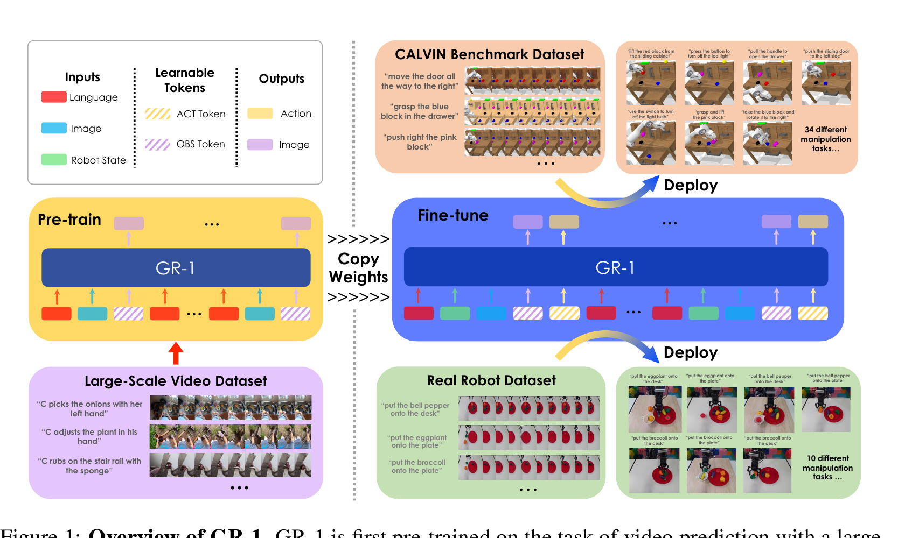

GR-1: Unleashing Large-Scale Video Generative Pre-training for Visual Robot Manipulation
Wu 等 · ICLR 2024 · arXiv:2312.13139 v2 · Zotero KKTDP5IS
GR-1 把互联网第一视角视频预训练转成机器人策略先验：同一个 GPT 式因果 Transformer 先预测未来图像，再在机器人数据上同时预测未来图像与当前动作，让“将会发生什么”成为“现在该怎么做”的训练约束。
§1 Introduction：为什么视频生成预训练可能比静态视觉预训练更接近控制
语言条件机器人策略必须同时理解场景、任务和时间变化。静态图像预训练能告诉模型“桌上有什么”，却不直接教授“抽屉拉开后画面怎样变化”；纯行为克隆又受限于昂贵机器人轨迹。GR-1 的核心观察是：机器人轨迹本身就是视频，预测未来帧与预测动作共享对物体运动、接触结果和任务进度的建模需求。
因此 GR-1 先在大规模人类视频上学习语言条件未来帧预测，再在机器人示范上把动作 token 与未来图像 token 放进同一个 GPT-style Transformer 共同训练。未来图像不是部署时先生成、再由 IDM 翻译的中间产品，而是训练同一骨干理解动力学的辅助输出；动作头直接从共享隐状态读出控制。
展开原文 · 核心主张
“predicts robot actions as well as future images in an end-to-end manner”
§2 Related Work：它为什么不是 UniPi，也不只是 Decision Transformer
Decision Transformer 把控制写成序列建模，但主要从机器人轨迹学习 return、状态和动作；UniPi 等 model-based 方法先生成完整视频计划，再由 IDM 推动作，模块清楚却存在串行推理和级联误差。GR-1 使用一个 Transformer 同时输出连续动作与未来图像：视频预训练可以直接初始化策略骨干，部署时无需完成一段 RGB rollout。
它也不同于把冻结视觉编码器接动作头的 VLA。GR-1 的视频预测目标持续出现在机器人微调阶段，迫使共享表示保留未来变化信息。RoboCat 等工作也联合预测动作与图像，但 GR-1 特别强调大规模、外域视频生成预训练能否迁移到语言条件操控。
§3 为什么它属于 Joint-AR
- $o_{t+\Delta t}$
- 未来观测，是视频预训练与机器人微调之间可迁移的共同监督。
- $a_t$
- 当前机器人动作，只在有动作标注的机器人数据上学习。
- Joint
- 微调阶段两种输出共享因果骨干并共同优化；未来预测不是部署时先生成、再反演动作的独立模块。
§4 统一骨干与两个读出头

1. 编码语言、历史图像和状态
Perceiver resampler 把可变数量视觉 token 压成固定长度。
输入是什么：相机图像或视频，加上任务指令和机器人当前状态。它们还是原始观测，模型尚未把它们变成可用于预测或控制的特征。
这一步究竟做什么：本步骤执行“编码语言、历史图像和状态”。具体来说，Perceiver resampler 把可变数量视觉 token 压成固定长度。 这里处理的只是整条链路中的一个接口：把上一步的结果整理成下一步能够正确读取和继续计算的形式。
输出到哪里：一组比原始输入更紧凑的内部特征；它不是最终动作或画面。这个结果会交给下一步“因果骨干融合历史”继续处理。
为什么不能省略：模型不能高效地直接在所有原始像素和长序列上推理；这一步把信息压成后续模块能处理、比较和复用的形式。
2. 因果骨干融合历史
输出请求 token 被遮挡，不能偷看未来标签。
输入是什么：来自上一步“编码语言、历史图像和状态”的产物：一组比原始输入更紧凑的内部特征；它不是最终动作或画面。本步骤还会按论文设置读取当前条件、时间步或训练信号。
这一步究竟做什么：本步骤执行“因果骨干融合历史”。具体来说，输出请求 token 被遮挡，不能偷看未来标签。 这里处理的只是整条链路中的一个接口：把上一步的结果整理成下一步能够正确读取和继续计算的形式。
输出到哪里：一组比原始输入更紧凑的内部特征；它不是最终动作或画面。这个结果会交给下一步“重建未来视觉”继续处理。
为什么不能省略：它承担上下两步之间的接口；缺少它，前一步产生的信息无法以正确格式或正确含义传到下一步。
3. 重建未来视觉
该头把大规模视频的时序知识带入控制。
输入是什么：来自上一步“因果骨干融合历史”的产物：一组比原始输入更紧凑的内部特征；它不是最终动作或画面。本步骤还会按论文设置读取当前条件、时间步或训练信号。
这一步究竟做什么：本步骤执行“重建未来视觉”。具体来说，该头把大规模视频的时序知识带入控制。 它把真实世界素材转换为既能渲染外观、又能与物理模块对齐的数字表示。
输出到哪里：一个可渲染或可交互的数字场景表示。这个结果会交给下一步“读取当前动作”继续处理。
为什么不能省略：只复制外观不能产生可信交互；需要把视觉表示与碰撞、关节或动力学对应起来，策略训练才有物理意义。
4. 读取当前动作
动作头共享同一世界表征，但无需先渲染图像再执行。
输入是什么：来自上一步“重建未来视觉”的产物：一个可渲染或可交互的数字场景表示。本步骤还会按论文设置读取当前条件、时间步或训练信号。
这一步究竟做什么：本步骤执行“读取当前动作”。具体来说，动作头共享同一世界表征，但无需先渲染图像再执行。 这个动作会真正改变环境，所以系统还要读取执行后的新观测，检查模型预期与现实之间的差距。
输出到哪里：经过本步骤处理、含义更明确的中间结果。这是图中这条链路的最终产物，随后会进入真实执行、模型更新或指标评测。
为什么不能省略：它把前面得到的内部结果落实为可执行动作、可训练模型或可解释指标，完成从方法到结果的最后一步。
§5 预训练与微调
§6 训练目标
- $\hat o_{t+\Delta t}$
- 模型预测的短期未来观测，迫使共享表征理解当前动作之后的视觉变化。
- $\mathcal L_{video}$
- 未来帧重建误差；它是辅助世界建模信号，不是最终控制目标。
- $\mathcal L_{arm}$ 与 $\mathcal L_{gripper}$
- 机械臂连续控制与夹爪状态的直接动作监督。
- $\mathcal L_{fine}$
- 三项联合微调；只有动作成功率随视频项消融而变化，才能把收益归因于世界预测。
连续机械臂用 Smooth-L1，二值夹爪用 BCE；未来图像像素 MSE 在微调中继续存在，因此动作表征始终被未来变化牵引。
§7 证据、价值与边界
§8 实验归因与复现：未来图像辅助目标真的在帮动作吗
最小可信复现清单
- 公开视频预训练数据、文本来源、帧间隔和 future prediction horizon。
- 机器人微调时图像损失与动作损失权重及各自梯度规模。
- 动作分布、归一化、history length 和 action chunk/单步输出设置。
- 相同视觉骨干与机器人数据下的 no-video-pretrain、no-future-loss 对照。
- 图像预测误差、离线动作误差和闭环任务成功率三者相关性。
GR-1 把世界预测当作动作学习的共享表征任务，而不是部署时必须显式经过的视频规划器。